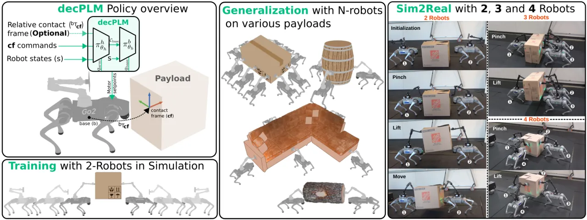
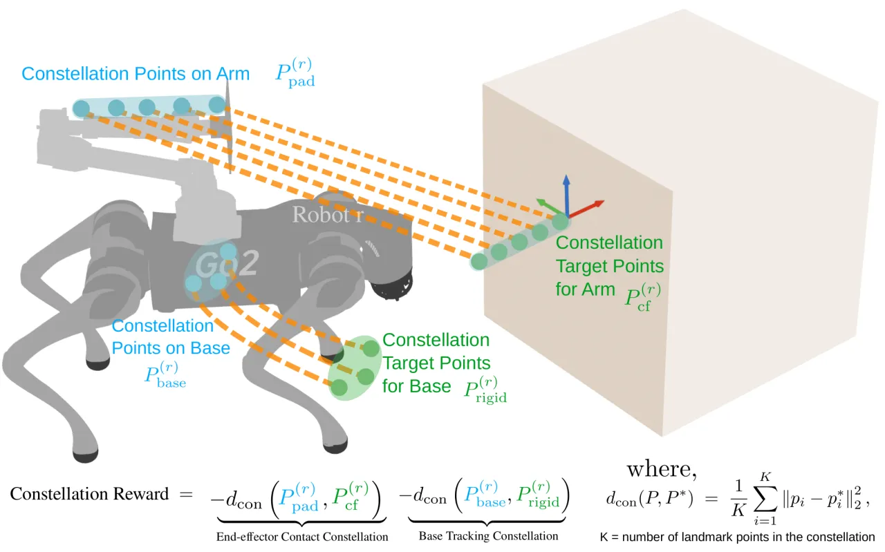
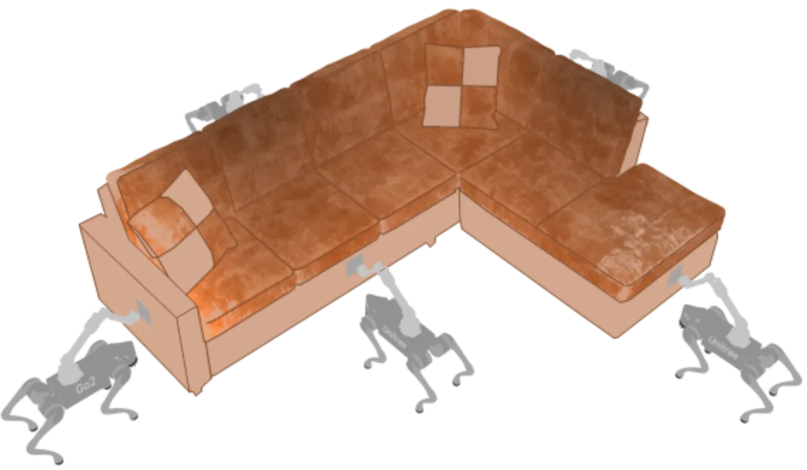
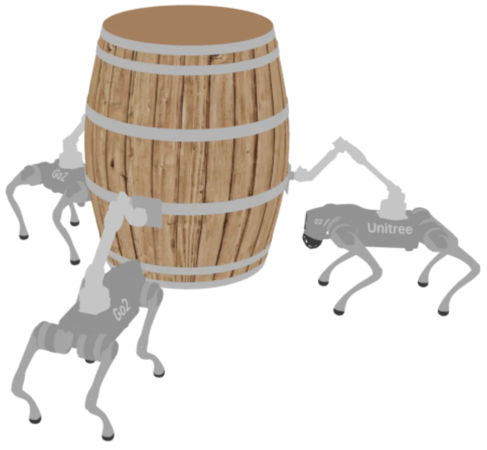
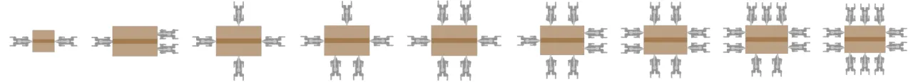

N 台带机械臂的四足机器人（Unitree Go2 + D1 arm），在无通信、无中心化控制、无刚性机械连接的条件下，仅靠接触力（pinch）协同把不可抓取的箱子/家具"夹—抬—搬"（pinch-lift-move）。核心是一个 constellation reward：通过奖励设计让机器人表现得"仿佛与物体刚性相连"。仅用 N=2 训练一次，即可零样本泛化到 2–10 台与多种几何/质量的物体。
多机器人协作搬运的既有工作，大多依赖机器人与负载之间的刚性机械耦合（螺栓、夹具、抓手锁死）。本文关注更难的设定：机械上彼此独立的机器人，只通过接触力协调，既不通信、也无中心化控制，去搬运本身无法被抓握（ungraspable）的大物体。难点在于——没有机械约束时，接触极易滑脱，团队如何"步调一致"地维持接触？
核心洞见（paraphrase from paper）："coordination can still emerge if reward shaping encourages robots to behave as if rigidly attached to the payload, even though they are only connected through pinching forces." —— 用奖励塑形让机器人"仿佛刚性连接"，而非施加真实机械约束。

方法名 decPLM（decentralized Pinch-Lift-Move）。两大支柱：分层策略把"腿部行走"与"手臂/协调"解耦；constellation reward 借鉴计算机视觉中的 point-set registration，用两组 landmark 点的对齐误差，把"维持刚性接触 + 跟踪目标位姿"统一成一个奖励。训练用 MAPPO（Centralized Training / Decentralized Execution，CTDE），仅 N=2、IsaacLab 2048 并行环境。
低层策略 πb：四足底盘的速度跟踪 locomotion，预训练并冻结。高层策略 πh：接收本体感受 s(r)、（可选的）contact-frame 位姿 Tbcf、contact-frame 指令 𝒞cf、以及时间同步信号 tsync∈[0,5]；输出手臂关节目标 + 底盘速度指令（后者喂给低层）。每台机器人独立以 50 Hz 运行两层策略，仅用本地信息，全队共享 θh，训练时用带特权信息的 asymmetric critic。策略网络为 2 层 128×128 MLP，拼接观测与历史动作。

其它：域随机化（动力学、接触参数、负载质量 0.1–2 kg、外力、初始位姿、传感/动作噪声）。当 contact-frame 位姿被 mask 时，采用渐进退火更新率：50 Hz → 25 Hz → 5 Hz → 0.25 Hz → 0 Hz。仿真器 IsaacLab，框架 RSL-RL。
在 IsaacLab 中广泛评测 2–10 台机器人、多种几何/质量物体，并给出 sim-to-real。变体记法：const± 表示是否用 constellation reward；cf⁺ 表示持续提供接触帧位姿，cfinit 表示仅初始化时提供、之后 mask。指标：线/角速度误差、高度误差、Drop%（掉落率）、Fall%（倾覆率）。
| Payload | N | Method | Lin.Vel.Err | Ang.Vel.Err | Height Err | Drop% | Fall% |
|---|---|---|---|---|---|---|---|
| Log (2kg) | 2 | const⁺, cf⁺ | 0.103 | 0.290 | 0.017 | 0.3 | 0.0 |
| Log (2kg) | 2 | const⁺, cfinit | 0.117 | 0.278 | 0.049 | 2.6 | 0.0 |
| Barrel (3kg) | 3 | const⁺, cf⁺ | 0.184 | 0.293 | 0.031 | 0.1 | 0.0 |
| Barrel (3kg) | 3 | const⁺, cfinit | 0.135 | 0.310 | 0.080 | 6.0 | 0.2 |
| Couch (10kg) | 5 | const⁺, cf⁺ | 0.145 | 0.229 | 0.098 | 15.0 | 0.4 |
| Couch (10kg) | 5 | const⁺, cfinit | 0.264 | 0.268 | 0.187 | 51.5 | 8.8 |
越重/越不规则的物体（couch），持续接触帧位姿 cf⁺ 越关键：从 cfinit 的 51.5% 掉落率降到 cf⁺ 的 15.0%。



"linear velocity error … decrease from 0.1 to 0.02 m/s when scaling from 2 to 10 robots, which is an 80% drop"；同时箱子掉落率 "fall from 5% to less than 1%"。—— 队伍越大，负载分摊越均匀、跟踪越稳。
存在约 15 kg 临界阈值，超过后即便加机器人也难以为继。在 15 kg 处：持续位姿 cf⁺ "maintains an 18% drop rate and 5% failure rate"；而 cfinit "degrades sharply to 60% drop rate and 40% failure rate"。
const⁺ 明显优于 const⁻。5 台时，即便接触位姿被 mask，const⁺,cfinit 在速度跟踪上仍 "approximately 50% better" 于 const⁻,cf⁺ 基线。硬件为 Unitree Go2 + D1 arm，接触 pad 覆橡胶。测试 2、3、4 台，负载为 1–2 kg 轻箱。策略"executed coordinated pinch–lift–move sequences"，但存在明显 sim-to-real gap，源于未知臂动力学、关节编码器偏置、有限臂力矩、以及箱体形变扰乱接触线索。
即使增加机器人数量，系统在约 15 kg 以上也会可靠地失效。
"unknown arm dynamics requiring manual gain tuning, joint encoder offsets needing external calibration, limited arm torque restricting payload capacity, and box deformability disrupting contact cues."
对更重/更不规则的负载，"continuous knowledge of contact frame pose becomes crucial"，否则稳定性显著下降（见 couch 与 15 kg 结果）。
奇数/非对称队伍因力矩平衡不均，速度误差略高。
方法假设回合开始时机器人已"positioned within a specified tolerance of their contact frames"，未涵盖自主接近与初始接触形成。